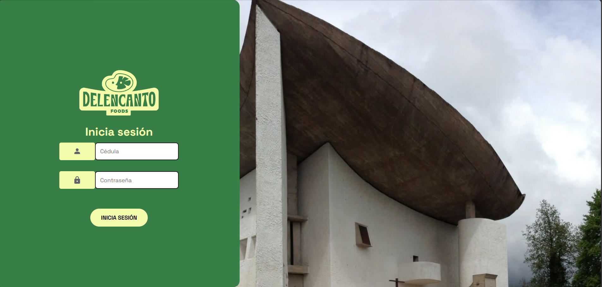
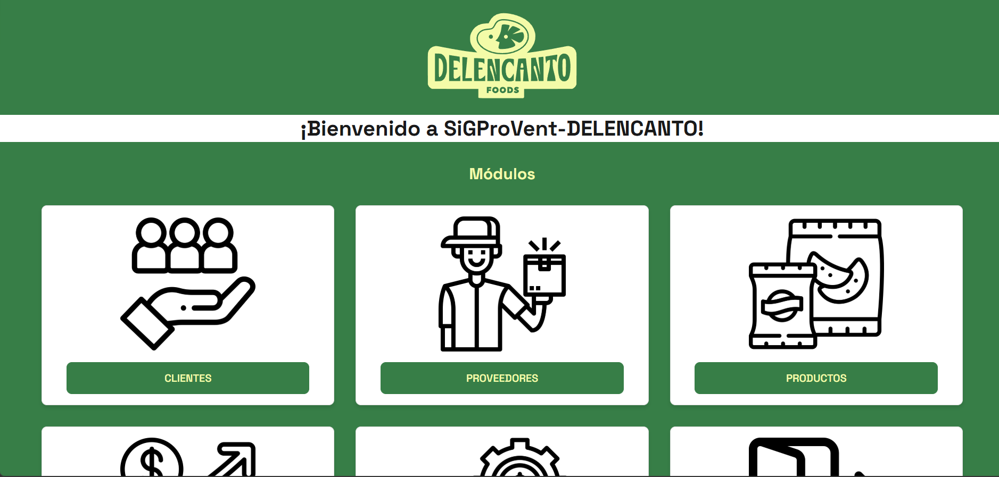
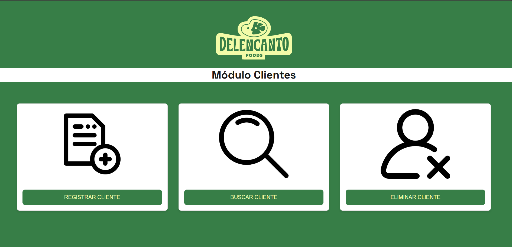
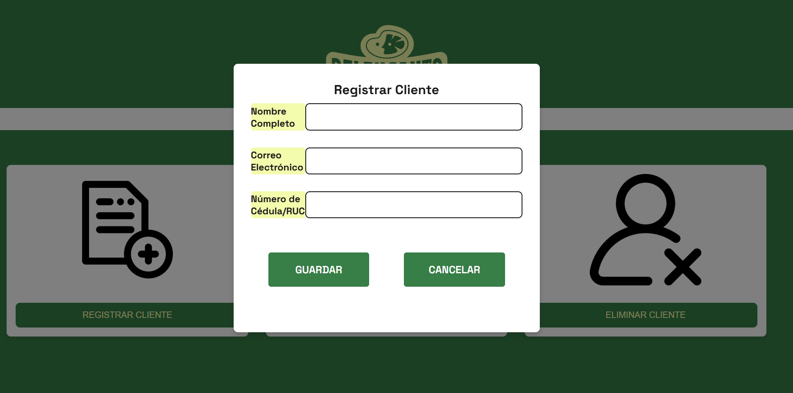
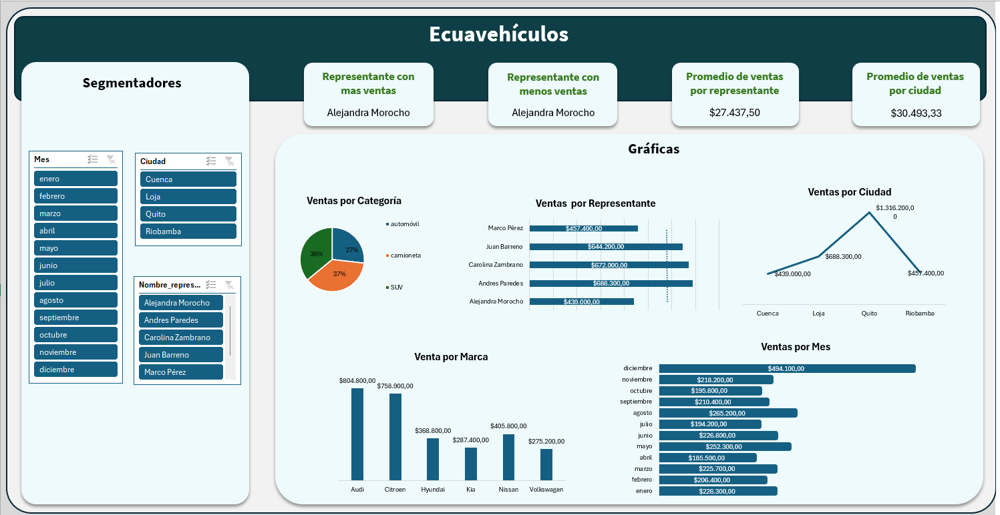
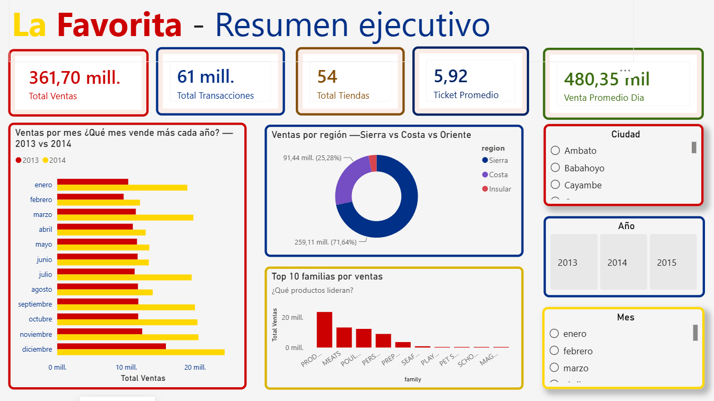
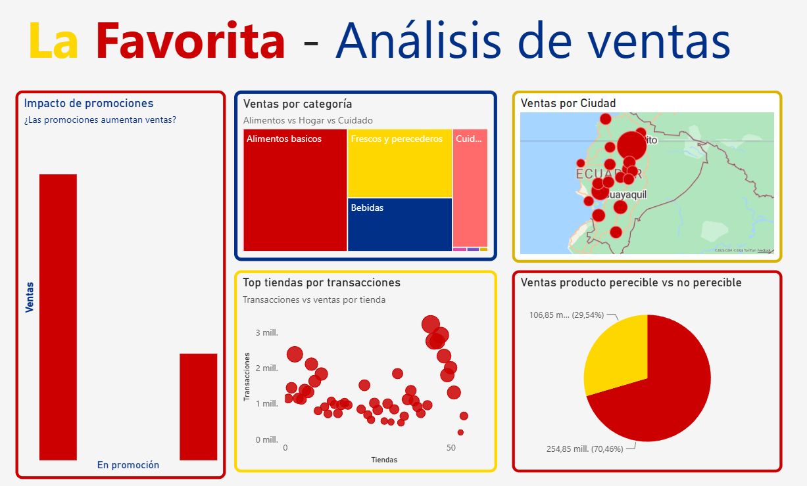

Portafolio
← RegresarProyectos destacados de Aplicaciones Móviles:
Sistema de Gestión y Producción
Proyecto desarrollado con HTML, CSS y JavaScript, que simula un sistema de gestión y producción para una empresa. El sistema permite a los usuarios gestionar inventarios, gestionar clientes, gestioner proveedores y generar informes de producción.




Proyectos destacados de Buisness Intelligence:
Dashboard excel
Dashboard interactivo en Excel para análisis de ventas, utilizando tablas dinámicas, gráficos y segmentación de datos para facilitar la toma de decisiones.

RepositorioDashboard Power BI
Este proyecto consiste en la construcción de una solución de Business Intelligence utilizando datos provenientes de la competencia Corporación Favorita Grocery Sales Forecasting de Kaggle. El objetivo principal fue diseñar e implementar un proceso ETL para integrar grandes volúmenes de datos en un Data Warehouse, permitiendo posteriormente el análisis multidimensional y la visualización de información mediante dashboards interactivos en Power BI.

